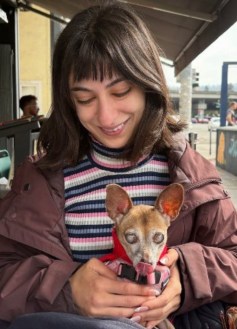

Hi! I'm Maria,
…and tiny dogs lover who believes exceptional design happens when creativity meets inclusivity.
Author-illustrator of Brittle Joints, a 2025 Eisner Award nominee and a New York Public Library Top 10 Graphic Novel. Now designing accessible products, tested with the people who rely on them.
Projects I'm proud of
Tap Talk: AAC communication app
A free app that speaks for people who lost their voice suddenly or can't talk right now. Built from 320+ reviews of 12 AAC apps, it opens straight to talking and works offline.
Disability Check: Trying work on SSDI
A plain-language guide that shows people on SSDI what happens to their check and their healthcare if they start working.
Books & Illustration
A graphic memoir, two picture books, and painterly illustration work, including Brittle Joints, a 2025 Eisner Award nominee.
What I do
Accessible product design
WCAG-grounded UX, from the first sketch to a shipped, tested flow. Accessibility is designed in, never bolted on.
Design systems & front-end
Component libraries an engineer and a designer both trust: tokens, accessible primitives, and docs that keep teams honest.
Illustration
Picture books, a graphic memoir, and editorial art. Painterly work that puts disabled people at the center of the story.
Accessibility audits & remediation
WCAG 2.2 reviews of live products, with fixes your team can ship, not a PDF of problems left on your desk.
Experience
Download résumé- Accessibility Program Lead & Visual DesignerTamman Inc. · Philadelphia, PAOct 2024 – May 2025
- Freelance Graphic Designer & Web DeveloperMaria Sweeney Art · Oakland, CAMay 2013 – Present
- Social Media ManagerRichard Solomon Artists · New York, NYMay 2014 – Sep 2015
- Certified Professional in Accessibility Core CompetenciesIAAP2025
- BFA, Illustration & Graphic DesignMoore College of Art & Design2012 – 2016
Somewhere between a sketchbook and a screen reader, that's where I work.
I was adopted from Moldova and raised in the Pine Barrens on the East Coast. I spent a decade in comics, publishing, and graphic design, and somewhere in there started noticing how many people get shut out of the things we make.

My graphic memoir Brittle Joints got two Eisner nominations and a Ringo nomination. You can probably find it at your local indie bookstore or library. If not, request it!
These days I design accessible apps, design systems, and interfaces that work for everyone, especially the people most often left out. A decade of drawing stories turns out to be pretty useful for that.
Out of the office, you can find me on a hike through the redwoods with my love and our blind rescue dog Bambi, making a wildflower arrangement on the way.
A few things that aren't on the résumé.


Let's make something
worth noticing.
I'm taking on new projects. Got one that needs thoughtful design and a touch of creativity? I'd love to hear about it.